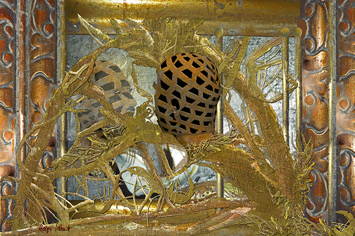
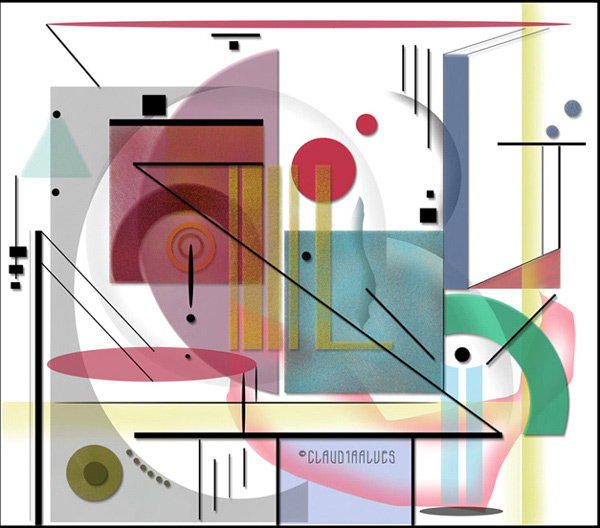
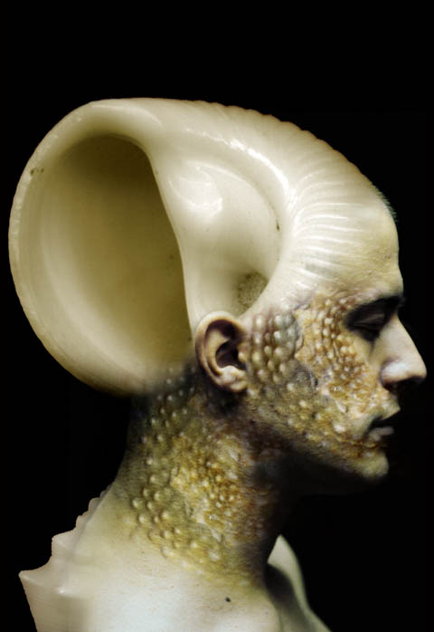
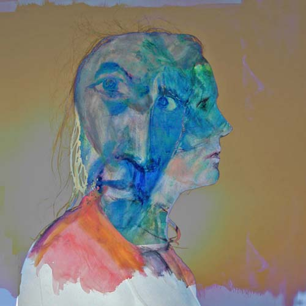
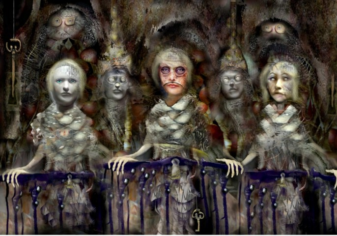
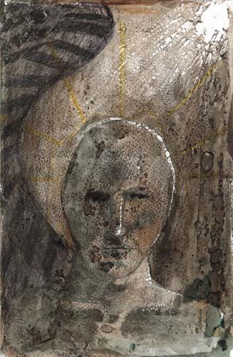
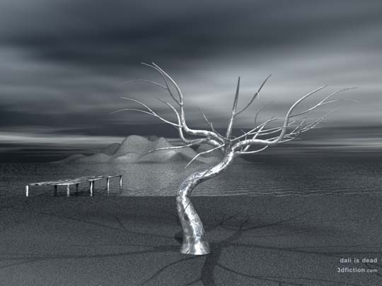

IMAGES OF THE DAY 68
05/01/2023 - 05/10/2023
THIS PAGE NOT YET FULLY POPULATED

3D Rendering
Creative Dreaming
Reflection
by Helga Schmitt Pullach
05/01/2023
Click image to access artist's full exhibit
Open Gallery 
Drawn/Painted
Life is Beautiful
by Claudia Alves
05/02/2023
Click image to access artist's full exhibit
Photo-based 
Chtulhu People
Image #d6
by Gulnur Guvenc
05/03/2023
Click image to access artist's full exhibit
Photo Art
Photo Composting
And the Band Played On
by Dave Acton
05/04/2023
Click image to access artist's full exhibit

Guest Gallery 
Drawn/Painted
Saturnia with Renee
by B. Felician Siebrecht
05/05/2023
Click image to access artist's full exhibit
Drawn/Painted
Lyric Abstraction
MO11
by Alain Valet
05/06/2023
Click image to access artist's full exhibit

Surreal 
Fantastic Realism
Watchers
by Rick Simpson
05/07/2023
Click image to access artist's full exhibit
Drawn/Painted 
Illustrations
Dark
by Jago Titcomb
05/08/2023
Click image to access artist's full exhibit
Rendered Art 
3D Fiction
Dali Is Dead
by Serdar Camlica
05/09/2023
Click image to access artist's full exhibit
Drawn/Painted
Cyber Alchemy
Birth of Spring
by Sara Deutsch
05/10/2023
Click image to access artist's full exhibit

BACK TO IMAGES OF THE DAY 67
NEXT